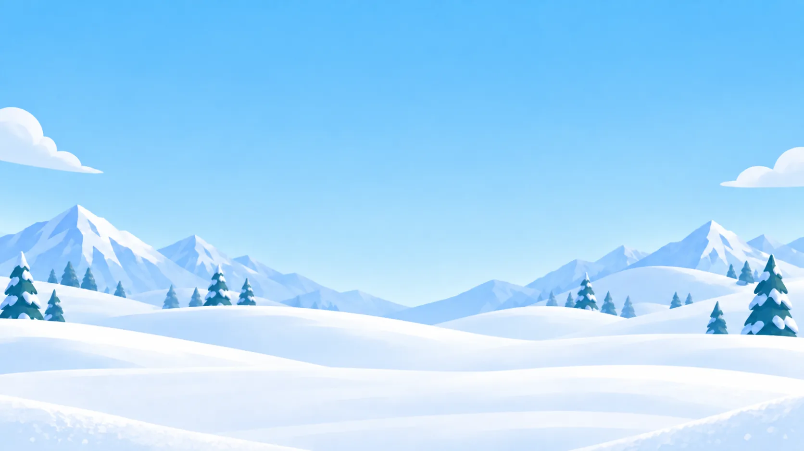
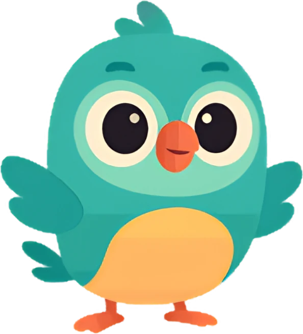
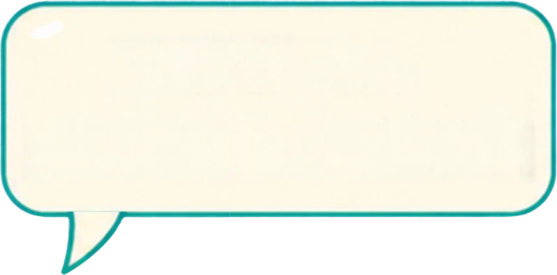

0
1
2
3
4
5
6
7
8
{{tg.t}}
A
B
C
D
A
B
C
D
A
B
C
D
68°
?
A
B
C
D
6 cm
10 cm
5 cm
?
{{o.t}}
{{sl.t}}
{{lb.t}}
Lesson complete!
{{scoreText}}
Play again
{{cp.t}}
{{hintText}}


{{wd.t}}
{{nextLabel}}
Trapeziums
Extend sides, drag corners and discover what makes a trapezium special.
Start
Turn your sound on to hear the narration.